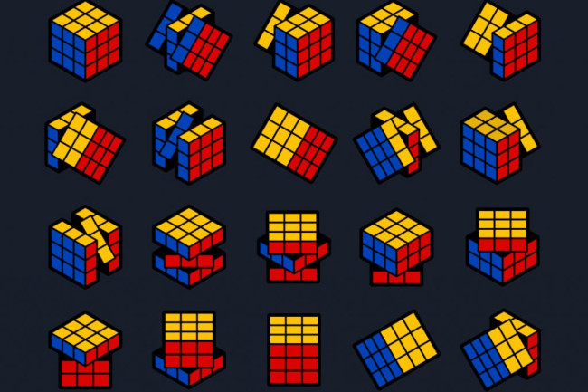
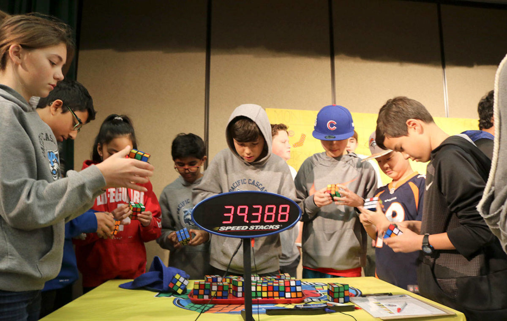
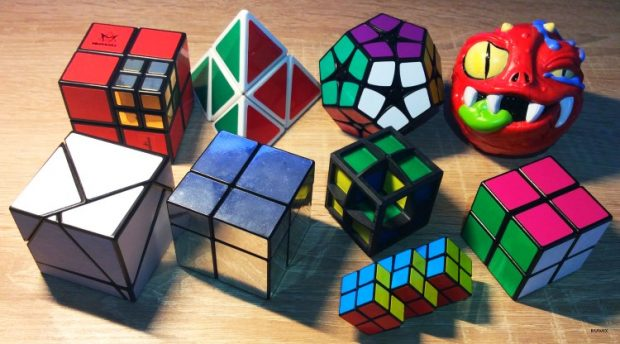

All methods have different levels of difficulties,
for speedcubers or beginners,
even for solving the cube blindfolded.
People usually get stuck solving the cube after completing the first face,
after that they need some help. Below video shows
you the easiest way to solve the cube using the beginner's method.
Watch this video

CFOP
The most popular Speedsolving method is
the CFOP (Cross, First 2 layers, Orientation of last layer,
Permutation of last layer) a.k.a Fridrich Method.
Unlike The beginner's method,
the Speedsolving method focuses mainly about
solving the Rubik's cube in the fastest and
most efficient way, rather than the easiest way.
Watch this video

ZZ
The ZZ Method or Zbigniew Zborowski Method is a
fast method for solving the Rubik's Cube created in 2006.
It consists of three different steps: EOLine
(Edge Orientation Line), F2L (First Two Layers),
and LL (Last Layer).
Watch this vedio
Petrus
The Petrus method is created in 1981 by Lars Petrus.
There are seven steps - 2x2x2 block, expand to 2x2x3, twist bad edges,
finish first two layers, position last layer corners,
twist last layer corners, and position last layer edges.
Watch this video
Roux
Roux is a Rubik's cube speedsolving method invented by Gilles Roux.
Unlike the CFOP and Petrus methods, the inventor of this method has
used it to achieve an official sub-15 average.
It is the favorite method of many top OH solvers.
Similarities can be drawn to the Petrus method's block building and
the Waterman method's layer-on-the-left and edges-last aspects.
Watch this video
